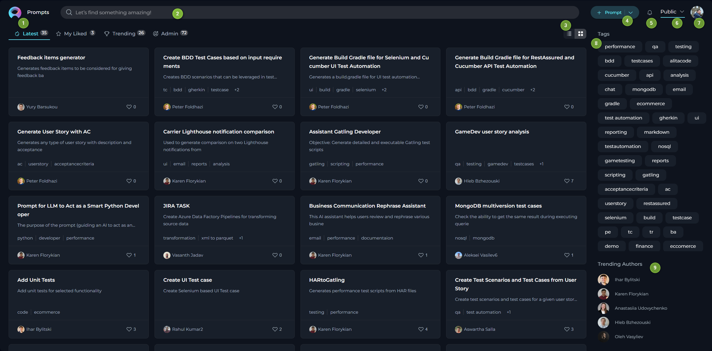
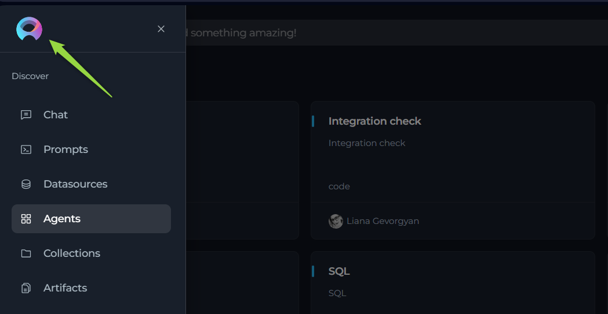

ELITEA Platform Overview
ELITEA - Main Interface
The ELITEA's main interface encompasses several sections, including the Discover Menu, Search feature, Quick Navigation tabs, Settings, a Quick button for creating new items (conversation, prompt, datasource, agent and collection, importing entities), Tags, and Trending Authors.

Sections:
- Discover Menu: A sidebar menu allowing users to switch among different menus such as Chat, Prompts, Datasources, Agents, Collections and Artifacts.
- Search: A Search box available to find prompts, datasources, agents and collections by their names and descriptions. Note: The Search functionality operates within the selected menu and is not universal across the entire application.
- View Switcher: A tool for quickly switching between Card list and Table views.
- Quick button: A button that allows for the rapid creation of a new conversation, prompt, datasource, agent or collection. The default of this button (
+Conversation,+Prompt,+Datasource,+Agentor+Collection) changes based on the selected menu. - Notifications: Notification's bell allowing user to get notified about various events such as prompt publishing status within the ELITEA.
- Project Switcher: A tool for quickly switching among projects.
- Settings: Accessible by clicking on your user avatar/picture. Here, you can configure various project and profile specific settings.
- Tags: This section displays the tags (categories) associated with the content being viewed. The tags vary depending on the selected menu.
- Trending Authors: Shows the authors who have recently contributed or shared the most trending prompts, datasources and agents with the community.

General Navigation and Management Across the Application
This section provides an overview of the common functionalities and actions available across various menus and pages within the application. The aim is to ensure a consistent and efficient user experience by maintaining uniformity in navigation and management features across both Private and Public projects.
Private Project Navigation:
In a Private project, you have exclusive access to your personalized content across the following menus:
- Chat menu: Access all your private and public conversations, allowing for seamless communication and collaboration.
- Prompts menu: View and manage all the prompts you have created, enabling easy modification and reuse.
- Datasources menu: Contains all the datasources you have developed.
- Agents menu: Access all your created agents, each designed to perform specific tasks or sets of tasks.
- Collections menu: Manage your collections of prompts, datasources, and agents, organized for specific projects or themes.
- Artifacts menu: Utilize the Artifacts toolkit to create Buckets in ELITEA for saving, updating (appending), reading, and deleting files. Artifacts serve as a temporary file storage solution, enhancing your project's data management capabilities.
Public Project Navigation:
In a Public project, you can engage with the community and explore content created by other users through the following sections:
- Prompts menu: Navigate through the Latest prompts, explore prompts you've liked (My Likes), and discover Trending prompts within the community.
- Datasources menu: Access the Latest datasources, view datasources you've liked (My Likes), and explore Trending datasources shared by the community.
- Agents menu: Discover the Latest agents, check out agents you've liked (My Likes), and find Trending agents that are popular in the community.
- Collections menu: Explore the Latest collections, view collections you've liked (My Likes), and discover Trending collections that are gaining attention.
While the context may vary depending on the specific page you're viewing, the core principles of action and functionality remain consistent. This unified approach ensures that whether you are navigating a private or public project, the experience is intuitive and user-friendly, facilitating effective management and exploration of content within the application.
Common Viewing Options
- Card list view: Offers a compact, card-format snapshot of items like prompts, datasources, agents and collections, making it easy to visually scan through published materials.
- Table view: Provides an in-depth look at individual items, presenting extensive details for a comprehensive analysis.
Search and Filtering Functionality
- Search: Seamlessly locate specific items by their name or description using the search feature, which operates within the menu you are currently exploring. This tool is invaluable for quickly finding relevant content.
- Filtering: Streamline your search by filtering items using specific tags. This feature is especially useful for discovering content related to particular subjects or themes.
Sorting Options (Detailed View Only)
- Name & Description: Alphabetically organize published items by their names, providing an effortless method to find specific titles.
- Create: Sort items by their creation date to monitor the chronological development of content or pinpoint the newest additions.
- Likes: Order the items by the number of likes they have received. This functionality is applicable only for menus within Public project.
- Authors: Sort the items by the author's name. This functionality is applicable only for menus within Public project.
These standardized functionalities across different menus and pages are designed to simplify navigation and enhance the content management process within the application, promoting a coherent and user-friendly environment.
Discover - Menus
ELITEA application consists of the following main menus:
- Chat
- Prompts
- Datasources
- Agents
- Collections
- Artifacts
Navigation:
- To naviagte among the menus, click the ELITEA icon on the top left.
- The Sidebar menu is opened.
- Click on the menu name to navigate to the desired menu.
